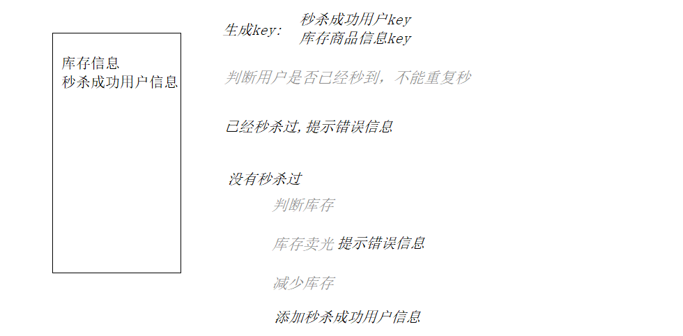
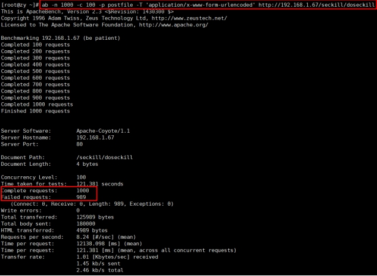
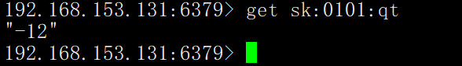
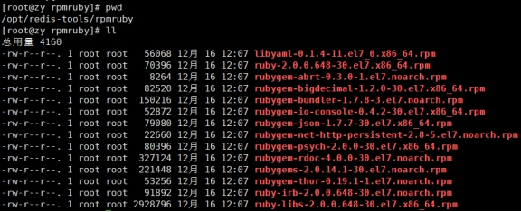

Redis
Redis
1. NoSQL数据库简介¶
1.1. 技术发展¶
1.1.1.Web1.0时代¶
1.1.2. Web2.0时代¶
1.1.3. 解决CPU及内存压力¶
1.1.4. 解决IO压力¶
1.2. NoSQL数据库¶
1.2.1. NoSQL数据库概述¶
NoSQL(NoSQ = Not Only SQ )，意即“不仅仅是SQL”，泛指非关系型的数据库。
NoSQ 不依赖业务逻辑方式存储，而以简单的key-value模式存储。因此大大的增加了数据库的扩展能力。
-
不遵循SQL标准。
-
不支持ACID。
-
远超于SQL的性能。
1.2.2. NoSQL适用场景¶
-
对数据高并发的读写
-
海量数据的读写
-
对数据高可扩展性的
1.2.3. NoSQL不适用场景¶
-
需要事务支持
-
基于sql的结构化查询存储，处理复杂的关系,需要即席查询。
-
（用不着sql的和用了sql也不行的情况，请考虑用NoSql）
1.2.4. Memcache¶
很早出现的NoSql数据库数据都在内存中，一般不持久化支持简单的key-value模式，支持类型单一 一般是作为缓存数据库辅助持久化的数据库
1.2.5. Redis¶
几乎覆盖了Memcached的绝大部分功能 数据都在内存中，支持持久化，主要用作备份恢复 除了支持简单的key-value模式，还支持多种数据结构的存储，比如 list、set、hash、zset等。一般是作为缓存数据库辅助持久化的数据库,发布订阅(MQ)
1.2.6. Mongdb¶

高性能、开源、模式自由(schema free)的文档型(table,bson)数据库 数据都在内存中， 如果内存不足，把不常用的数据保存到硬盘 虽然是key-value模式，但是对value（尤其是json）提供了丰富的查询功能(JavaScript) ,(分布式文件存储系统)支持二进制数据及大型对象 可以根据数据的特点替代RDBMS ，成为独立的数据库。或者配合RDBMS，存储特定的数据。
1.3. 行式存储数据库（大数据时代）¶
1.3.1. 行式数据库¶
1.3.2. 列式数据库¶
1.3.2.1. Hbase¶
HBase是Hadoop项目中的数据库。它用于需要对大量的数据进行随机、实时的读写操作的场景中。
HBase的目标就是处理数据量非常庞大的表，可以用普通的计算机处理超过10亿行数据，还可处理有数百万列元素的数据表。
1.3.2.2. Cassandra [kəˈsændrə]¶
Apache Cassandra是一款免费的开源NoSQL数据库，其设计目的在于管理由大量商用服务器构建起来的庞大集群上的海量数据集(数据量通常达到PB级别)。在众多显著特性当中，Cassandra最为卓越的长处是对写入及读取操作进行规模调整，而且其不强调主集群的设计思路能够以相对直观的方式简化各集群的创建与扩展流程。
1.4. 图关系型数据库¶
主要应用：社会关系，公共交通网络，地图及网络拓谱(n*(n-1)/2)
1.5.DB-Engines 数据库排名¶
http://db-engines.com/en/ranking
2. Redis概述¶
More ActionsRedis官方网站http://redis.io
Redis中文官方网站http://www.redis.net.cn
-
Redis是一个开源的key-value存储系统。
-
和Memcached类似，它支持存储的value类型相对更多，包括string(字符串)、list(链表)、set(集合)、zset(sorted set --有序集合)和hash（哈希类型）。
-
这些数据类型都支持push/pop、add/remove及取交集并集和差集及更丰富的操作，而且这些操作都是原子性的。
-
在此基础上，Redis支持各种不同方式的排序。
-
与memcached一样，为了保证效率，数据都是缓存在内存中。
-
区别的是Redis会周期性的把更新的数据写入磁盘或者把修改操作写入追加的记录文件。
-
并且在此基础上实现了master-slave(主从)同步。
2.1. 应用场景¶
2.1.1. 配合关系型数据库做高速缓存¶
-
高频次，热门访问的数据，降低数据库IO
-
分布式架构，做session共享

2.1.2. 多样的数据结构存储持久化数据¶
2.2. Redis安装¶
2.2.1. 安装版本：4.0.0 for Linux（redis-4.0.0.tar.gz）¶
不用考虑在windows环境下对Redis的支持
2.2.2. 安装步骤¶
下载redis-4.0.0.tar.gz拷贝到/opt目录
解压命令：tar -zxvf redis-4.0.0.tar.gz
解压完成后进入目录：cd redis-4.0.0
在redis-4.0.0 目录下执行编译命令：make
gcc：命令未找到
能上网：
安装C、C++语言的编译环境
yum install gcc -y
yum install gcc-c++ -y
不能上网
执行 cd /run/media/root/CentOS 7 x86_64/Packages（已经从中拷贝出来了26个安装包，直接使用准备好的文件夹rpmgcc安装即可）
rpm -Uvh *.rpm --nodeps --force
安装后版本
gcc -v
g++ -v
2.2.2.6. 再make会报错—Jemalloc/jemalloc.h：没有那个文件¶
2.2.2.7. 解决方案：运行make distclean¶
2.2.2.8. 在redis-3.2.5目录下再次执行make命令（只是编译好）¶
2.2.2.9. 跳过make test 继续执行: make install¶
2.2.3. 安装目录：/usr/local/bin¶
查看默认安装目录：
redis-benchmark:性能测试工具，可以在自己本子运行，看看自己本子性能如何
redis-check-aof：修复有问题的AOF文件，rdb和aof后面讲
redis-check-dump：修复有问题的dump.rdb文件
redis-sentinel：Redis集群使用
redis-server：Redis服务器启动命令
redis-cli：客户端，操作入口
2.2.4. 前台启动（不推荐）¶
前台启动，命令行窗口不能关闭，否则服务器停止
redis-cli -h 192.168.153.130 -p 6379 因为有保护模式所以外网链接存储数失败,
redis-cli 本地连接存储数据成功
2.2.5. 后台启动（推荐）¶
2.2.5.1. 备份redis.conf¶
拷贝一份redis.conf到其他目录
cp redis.conf /usr/local/bin/myredis/redis.conf
2.2.5.2. 修改配置文件内容¶
daemonize no 改成 yes，让服务在后台启动
#bind 127.0.0.1，注释掉可以让外网连接
protected-mode no，关闭保护模式
2.2.5.3. Redis启动¶
./redis-server myredis/redis.conf
查看redis是否启动 ps -ef|grep redis
2.2.5.4. 用客户端访问：redis-cli¶
2.2.5.5. 多个端口访问可以：redis-cli -h 192.168.153.128 -p 6379¶
2.2.5.6. 测试验证： ping¶
2.2.5.7. Redis关闭¶
单实例关闭：redis-cli shutdown,将服务也会关闭
也可以进入终端后再关闭
多实例关闭，指定端口关闭：redis-cli -h 192.168.153.128 -p 6379 shutdown
2.2.6. Redis介绍相关知识¶
- 端口6379从何而来 Alessia Merz
- 默认16个数据库，类似数组下标从0开始，初始默认使用0号库 使用命令 select
来切换数据库。 - 如: select 8 统一密码管理，所有库同样密码。
- dbsize查看当前数据库的key的数量
- flushdb清空当前库 flushall通杀全部库
2.2.7 Redis是单线程+多路IO复用技术¶
使用可以对Redis做性能测试https://www.redis.net.cn/tutorial/3521.html
redis-benchmark -h localhost -p 6379 -c 100 -n 100000
- Redis采用单线程操作,官方提供的数据为100000+ 的QPS
- Redis是基于内存(RAM)操作,CPU不是Redis性能瓶颈,而是根据机器的内存和网络带宽
- 注意:
- 高性能的服务器并不是多线程的,因为多线程(CPU上下文切换)会耗时,但是效率会比单线程的要高
- 读写速度:CPU>内存>硬盘
- Redis将所有的数据放在内存中,所以单线程操作效率是最高的,多线程操作对于内存系统来说会有CPU上下文切换耗时
- 多路复用是指使用一个线程来检查多个文件描述符（Socket）的就绪状态，比如调用select和poll以及expoll函数，传入多个文件描述符，如果有一个 文件描述符就绪,则返回，否则阻塞直到超时。得到就绪状态后进行真正的操作可以在同一个线程里执行，也可以启动线程执行（比如使用线程池）

串行 vs 多线程+锁（memcached） vs 单线程+多路IO复用(Redis)
（与Memcached三点不同: 支持多数据类型，支持持久化，单线程+多路IO复用）
3. 常用五大数据类型简介¶
redis常见数据类型操作命令Http://redisdoc.com/
3.1. Redis键(key)¶
keys * 查看当前库所有key (匹配：keys *) 禁用
exists key 判断某个key是否存在
type key 查看你的key是什么类型
del key 删除指定的key数据
expire key 10 10秒钟：为给定的key设置过期时间,所有存储的数据都需要进行时间设置
ttl key 查看还有多少秒过期，-1表示永不过期，-2表示已过期
select 命令切换数据库
dbsize 查看当前数据库的key的数量
flushdb 清空当前库
flushall 通杀全部库
3.2. Redis字符串(String)¶
- String是Redis最基本的类型，一个key对应一个value。 Map
- String类型是二进制安全的。意味着Redis的string可以包含任何数据。比如jpg图片或者序列化的对象。
- String类型是Redis最基本的数据类型，一个Redis中字符串value最多可以是512M
set <key> <value> 添加键值对,如果键已经存在则修改
get <key> 查询对应键值
append <key> <value> 将给定的<value> 追加到原值的末尾
strlen <key> 获得值的长度
setnx <key> <value> 只有在 key 不存在时 设置 key 的值,分布式锁
incr <key> 将 key 中储存的数字值增1 只能对数字值操作，如果为空，新增值为1
decr <key> 将 key 中储存的数字值减1 只能对数字值操作，如果为空，新增值为-1
incrby / decrby <key> <步长> 将 key 中储存的数字值增减。自定义步长。
mset <key1> <value1> <key2> <value2> ..... 同时设置一个或多个 key-value对
mget <key1> <key2> <key3> ..... 同时获取一个或多个 value
msetnx <key1> <value1> <key2> <value2> .....同时设置一个或多个 key-value 对，当且仅当所有给定 key 都不存在。
getrange <key> <起始位置> <结束位置> 获得值的范围，类似java中的substring，前包，后包
setrange <key> <起始位置> <value> 用 <value> 覆写<key> 所储存的字符串值，从<起始位置>开始(索引从0开始)。
setex <key> <过期时间> <value> 设置键值的同时，设置过期时间，单位秒。
getset <key> <value> 以新换旧，设置了新值同时获得旧值。
原子性
所谓原子操作是指不会被线程调度机制打断的操作；
这种操作一旦开始，就一直运行到结束，中间不会有任何 context switch （切换到另一个线程）。
（1）在单线程中， 能够在单条指令中完成的操作都可以认为是" 原子操作"，因为中断只能发生于指令之间。
（2）在多线程中，不能被其它进程（线程）打断的操作就叫原子操作。Redis单命令的原子性主要得益于Redis的单线程。
原子性，有一个失败则都失败
案例：
java中的i++是否是原子操作？不是
i=0;两个线程分别对i进行++100次,值是多少？2~200

3.3. Redis列表(List)¶
-
单键多值
-
Redis 列表是简单的字符串列表，按照插入顺序排序。你可以添加一个元素到列表的头部（左边）或者尾部（右边）。
-
它的底层实际是个双向链表，对两端的操作性能很高，通过索引下标的操作中间的节点性能会较差。
size /2 > 4?从尾开始:从头开始
xml
lpush/rpush <key> <value1> <value2> <value3> .... 从左边/右边插入一个或多个值。
lpop/rpop <key> 从左边/右边吐出一个值。值在键在，值光键亡。
rpoplpush <key1> <key2> 从<key1>列表右边吐出一个值，插到<key2>列表左边。
lrange <key> <start> <stop> 按照索引下标获得元素(从左到右)
lrange mylist 0 -1 从0开始，-1表示获取所有
lindex <key> <index> 按照索引下标获得元素(从左到右)
llen <key> 获得列表长度
linsert <key> before <value> <newvalue> 在<value>的后面插入<newvalue> 插入值
lrem <key> <n> <value> 从左边删除n个value(从左到右)
3.4. Redis集合(Set)¶
- set对外提供的功能与list类似是一个列表的功能，特殊之处在于set是可以自动排重的，当你需要存储一个列表数据，又不希望出现重复数据时，set是一个很好的选择，并且set提供了判断某个成员是否在一个set集合内的重要接口，这个也是list所不能提
- set是string类型的无序集合。它底层其实是一个value为null的hash表，所以添加，删除，查找的复杂度都是O(1)。
- 一个算法，随着数据的增加，执行时间的长短，如果是O(1)，数据增加，查找数据的时间不变
sadd <key> <value1> <value2> ..... 将一个或多个 member 元素加入到集合 key 中，已经存在的 member 元素将被忽略
smembers <key> 取出该集合的所有值。
sismember <key> <value> 判断集合<key>是否为含有该<value>值，有1，没有0
scard <key> 返回该集合的元素个数。
srem <key> <value1> <value2> .... 删除集合中的某个元素。
spop <key> 随机从该集合中吐出一个值。
srandmember <key> <n> 随机从该集合中取出n个值。不会从集合中删除 。
sinter <key1> <key2> 返回两个集合的交集元素。
sunio <key1> <key2> 返回两个集合的并集元素。
sdiff <key1> <key2> 返回两个集合的差集元素(key1中的，不包含key2中的)
3.5. Redis哈希(Hash)¶
- hash 是一个键值对集合。
- hash是一个string类型的field和value的映射表，hash特别适合用于存储对象。
- 类似Java里面的Map
- 用户ID为查找的key，存储的value用户对象包含姓名，年龄，生日等信息，如果用普通的key/value结构来存储
| 每次修改用户的某个属性需要，先反序列化改好后再序列化回去。开销较大。 | 用户ID数据冗余 |
|---|---|
 |
通过 key(用户ID) + field(属性标签) 就可以操作对应属性数据了，既不需要重复存储数据，也不会带来序列化和并发修改控制的问题 |
hset <key> <field> <value> 给<key>集合中的 <field>键赋值<value>
hget <key1> <field> 从<key1>集合<field> 取出 value
hmset <key1> <field1> <value1> <field2> <value2>... 批量设置hash的值
hexists <key1> <field> 查看哈希表 key 中，给定域 field 是否存在。
hkeys <key> 列出该hash集合的所有field
hvals <key> 列出该hash集合的所有value
hincrby <key> <field> <increment> 为哈希表 key 中的域 field 的值加上增量 1 -1
hsetnx <key> <field> <value> 将哈希表 key 中的域 field 的值设置为 value ，当且仅当域 field 不存在
3.6. Redis有序集合Zset(sorted set)¶
- zset与普通集合set非常相似，是一个没有重复元素的字符串集合。
- 不同之处是有序集合的每个成员都关联了一个评分（score）,这个评分（score）被用来按照从最低分到最高分的方式排序集合中的成员。
- 集合的成员是唯一的，但是评分可以是重复了 。
- 因为元素是有序的, 所以你也可以很快的根据评分（score）或者次序（position）来获取一个范围的元素。
- 访问有序集合的中间元素也是非常快的,因此你能够使用有序集合作为一个没有重复成员的智能列表。
zadd <key> <score1> <value1> <score2> <value2>...... 将一个或多个member元素及其score值加入到有序集key当中。
zrange <key> <start> <stop> [WITHSCORES] 返回有序集key中，下标在<start><stop>之间的元素,并进行升序排列,带WITHSCORES，可以让分数一起和值返回到结果集。
zrangebyscore <key> min max [withscores] [limit offset count] 返回有序集key中，所有score值介于min和max之间(包括等于 min 或 max )的成员。有序集成员按 score 值递增(从小到大)次序排列。
zrevrangebyscore <key> max min [withscores] [limit offset count] 同上,带有分页
zincrby <key> <increment> <value> 为元素的score加上增量
zrem <key> <value> 删除该集合下，指定值的元素
zcount <key> <min> <max> 统计该集合，分数区间内的元素个数
zrank <key> <value> 返回该值在集合中的排名，从0开始。
如何利用zset实现一个文章访问量的排行榜？
案例：
4. Redis配置文件介绍¶
自定义目录：/myredis/redis.conf
4.1. ###Units单位###¶
配置大小单位,开头定义了一些基本的度量单位，只支持bytes，不支持bit
大小写不敏感
4.2. ###INCLUDES包含¶
类似jsp中的include，多实例的情况可以把公用的配置文件提取出来
4.3. ###网络相关配置¶
4.3.1. bind¶
默认情况bind=127.0.0.1只能接受本机的访问请求
不写的情况下，无限制接受任何ip地址的访问
生产环境肯定要写你应用服务器的地址；服务器是需要远程访问的，所以需要将其注释掉
如果开启了protected-mode，那么在没有设定bind ip且没有设密码的情况下，Redis只允许接受本机的相应
保存配置，停止服务，重启启动查看进程，不再是本机访问了。
4.3.2. protected-mode¶
将本机访问保护模式设置no
4.3.3. Port¶
端口号，默认 6379
4.3.4. tcp-backlog¶
设置tcp的backlog，backlog其实是一个连接队列，backlog队列总和=未完成三次握手队列 + 已经完成三次握手队列。
在高并发环境下你需要一个高backlog值来避免慢客户端连接问题。
注意Linux内核会将这个值减小到/proc/sys/net/core/somaxconn的值(128),所以需要确认增大/proc/sys/net/core/somaxconn和/proc/sys/net/ipv4/tcp_max_syn_backlog(128) 两个值来达到想要的效果
4.3.5. timeout¶
一个空闲的客户端维持多少秒会关闭，0表示关闭该功能。即永不关闭。
4.3.6. tcp-keepalive¶
对访问客户端的一种心跳检测，每个n秒检测一次。
单位为秒，如果设置为0，则不会进行Keepalive检测，建议设置成60
4.4. ###GENERAL通用¶
4.4.1. daemonize¶
是否为后台进程，设置为yes
守护进程，后台启动
4.4.2. pidfile¶
存放pid文件的位置，每个实例会产生一个不同的pid文件
4.4.3. logleve¶
指定日志记录级别，Redis总共支持四个级别：debug、verbose、notice、warning，默认为notice
四个级别根据使用阶段来选择，生产环境选择notice 或者warning
4.4.4. logfile¶
日志文件名称
4.4.5. databases 16¶
设定库的数量 默认16，默认数据库为0，可以使用SELECT
4.5. ###SECURITY安全¶
4.5.1. 设置密码¶
访问密码的查看、设置和取消
在命令中设置密码，只是临时的。重启redis服务器，密码就还原了。
永久设置，需要在配置文件中进行设置。
4.6. #### Limits限制¶
4.6.1. maxclients¶
设置redis同时可以与多少个客户端进行连接。
默认情况下为10000个客户端。
如果达到了此限制，redis则会拒绝新的连接请求，并且向这些连接请求方发出“max number of clients reached”以作回应。
4.6.2. maxmemory¶
- 建议必须设置，否则，将内存占满，造成服务器宕机。
- 设置redis可以使用的内存量。一旦到达内存使用上限，redis将会试图移除内部数据，移除规则可以通过maxmemory-policy来指定。
- 如果redis无法根据移除规则来移除内存中的数据，或者设置了“不允许移除”，那么redis则会针对那些需要申请内存的指令返回错误信息，比如SET、LPUSH等。但是对于无内存申请的指令，仍然会正常响应，比如GET等。
- 如果你的redis是主redis（说明你的redis有从redis），那么在设置内存使用上限时，需要在系统中留出一些内存空间给同步队列缓存，只有在你设置的是“不移除”的情况下，才不用考虑这个因素。
4.6.3. maxmemory-policy¶
- volatile-lru：使用LRU算法移除key，只对设置了过期时间的键；（最近最少使用）
- allkeys-lru：在所有集合key中，使用LRU算法移除key
- volatile-random：在过期集合中移除随机的key，只对设置了过期时间的键
- allkeys-random：在所有集合key中，移除随机的key
- volatile-ttl：移除那些TTL值最小的key，即那些最近要过期的key
- noeviction：不进行移除。针对写操作，只是返回错误信息
4.6.4. maxmemory-samples¶
设置样本数量，LRU算法和最小TTL算法都并非是精确的算法，而是估算值，所以你可以设置样本的大小，redis默认会检查这么多个key并选择其中LRU的那个。
一般设置3到7的数字，数值越小样本越不准确，但性能消耗越小。
5. Redis_Jedis_测试¶
5.1. Jedis所需要的jar包¶
commons-pool2-2.4.2.jar
jedis-2.8.1.jar
5.2. 连接Redis注意事项¶
//禁用Linux的防火墙：Linux(CentOS7)里执行命令
systemct stop/disable firewalld.service
//redis.conf中注释掉
bind 127.0.0.1 ; protected-mode no
//添加指定需要开放的端口：
firewall-cmd --add-port=6379/tcp --permanent
//重载入添加的端口：
firewall-cmd --reload
5.3. Jedis常用操作¶
5.3.1. 创建动态的web工程¶
5.3.2. 创建测试程序¶
@Test
public void testConn(){
//ip,port
Jedis jedis = new Jedis("192.168.153.131",6379);
//测试连接
String pong = jedis.ping();
System.err.println(pong);
jedis.close();
}
5.4. 测试相关数据类型¶
5.4.1. Jedis-API: Key¶
@Test
public void testKey(){
jedis.set("k1", "v1");
jedis.set("k2", "v2");
jedis.set("k3", "v3");
//所有key
Set<String> keys = jedis.keys("*");
System.out.println(keys.size());
for (String key : keys) {
System.out.println(key);
}
System.out.println(jedis.exists("k1"));
//-1:永远不过期 -2:过期
System.out.println(jedis.ttl("k1"));
System.out.println(jedis.get("k1"));
}
5.4.2. Jedis-API: String¶
@Test
public void testString(){
jedis.mset("str1","v1","str2","v2","str3","v3");
System.out.println(jedis.mget("str1","str2","str3"));
}
5.4.3. Jedis-API: List¶
@Test
public void testList(){
jedis.lpush("mylist", "z3","l4","z6");
List<String> list = jedis.lrange("mylist",0,-1);
for (String element : list) {
System.out.println(element);
}
}
5.4.4. Jedis-API: set¶
@Test
public void testSet() {
jedis.sadd("orders", "order01");
jedis.sadd("orders", "order02");
jedis.sadd("orders", "order03");
jedis.sadd("orders", "order04");
//获取所有的value
Set<String> smembers = jedis.smembers("orders");
for (String order : smembers) {
System.out.println(order);
}
//删除
jedis.srem("orders", "order02");
}
5.4.5. Jedis-API: hash¶
@Test
public void testHash(){
jedis.hset("hash1","userName","lisi");
System.out.println(jedis.hget("hash1","userName"));
Map<String,String> map = new HashMap<String,String>();
map.put("telphone","13810169999");
map.put("address","atguigu");
map.put("email","abc@163.com");
jedis.hmset("hash2",map);
List<String> result = jedis.hmget("hash2", "telphone","email");
for (String element : result) {
System.out.println(element);
}
}
5.4.6. Jedis-API: zset¶
@Test
public void testZset(){
jedis.zadd("zset01", 100d, "z3");
jedis.zadd("zset01", 90d, "l4");
jedis.zadd("zset01", 80d, "w5");
jedis.zadd("zset01", 70d, "z6");
Set<String> zrange = jedis.zrange("zset01", 0, -1);
for (String e : zrange) {
System.out.println(e);
}
}
5.5 手机验证码案例¶

- index.jsp
<%@ page language="java" contentType="text/html; charset=UTF-8"
pageEncoding="UTF-8"%>
<!DOCTYPE html PUBLIC "-//W3C//DTD HTML 4.01 Transitional//EN" "http://www.w3.org/TR/html4/loose.dtd">
<html>
<head>
<meta http-equiv="Content-Type" content="text/html; charset=ISO-8859-1">
<title>Insert title here</title>
<script src="${pageContext.request.contextPath}/static/jquery/jquery-3.1.0.js" ></script>
<link href="${pageContext.request.contextPath}/static/bs/css/bootstrap.min.css" rel="stylesheet" />
<script src="${pageContext.request.contextPath}/static/bs/js/bootstrap.min.js" ></script>
</head>
<body>
<div class="container">
<div class="row">
<div id="alertdiv" class="col-md-12">
<form class="navbar-form navbar-left" role="search" id="codeform">
<div class="form-group">
<input type="text" class="form-control" placeholder="填写手机号" name="phone_no">
<button type="button" class="btn btn-default" id="sendCode">发送验证码</button><br>
<font id="countdown" color="red" ></font>
<br>
<input type="text" class="form-control" placeholder="填写验证码" name="verify_code">
<button type="button" class="btn btn-default" id="verifyCode">确定</button>
<font id="result" color="green" ></font><font id="error" color="red" ></font>
</div>
</form>
</div>
</div>
</div>
</body>
<script type="text/javascript">
var t=120;//设定倒计时的时间
var interval;
function refer(){
$("#countdown").text("请于"+t+"秒内填写验证码 "); // 显示倒计时
t--; // 计数器递减
if(t<=0){
clearInterval(interval);
$("#countdown").text("验证码已失效，请重新发送！ ");
}
}
$(function(){
$("#sendCode").click( function () {
$.post("${pageContext.request.contextPath}/CodeSenderServlet",$("#codeform").serialize(),function(data){
if(data=="true"){
t=120;
clearInterval(interval);
interval= setInterval("refer()",1000);//启动1秒定时
}else if (data=="limit"){
clearInterval(interval);
$("#countdown").text("单日发送超过次数！ ")
}
});
});
$("#verifyCode").click( function () {
$.post("${pageContext.request.contextPath}/CodeVerifyServlet",$("#codeform").serialize(),function(data){
if(data=="true"){
$("#result").attr("color","green");
$("#result").text("验证成功");
clearInterval(interval);
$("#countdown").text("")
}else{
$("#result").attr("color","red");
$("#result").text("验证失败");
}
});
});
});
</script>
</html>
2.CodeSenderServlet
package com.atguigu.web;
import com.atguigu.utils.VerifyCodeConfig;
import redis.clients.jedis.Jedis;
import javax.servlet.ServletException;
import javax.servlet.annotation.WebServlet;
import javax.servlet.http.HttpServlet;
import javax.servlet.http.HttpServletRequest;
import javax.servlet.http.HttpServletResponse;
import java.io.IOException;
import java.util.Random;
public class CodeSenderServlet extends HttpServlet {
protected void doPost(HttpServletRequest request, HttpServletResponse response) throws ServletException, IOException {
//得到手机号
String phoneNo = request.getParameter("phone_no");
//验空
if (null == phoneNo && phoneNo == "") {
return;
}
//连接redis
Jedis jedis = new Jedis(VerifyCodeConfig.HOST, VerifyCodeConfig.PORT);
//得到发送验证码次数
//次数key
String countKey = VerifyCodeConfig.PHONE_PREFIX + phoneNo + VerifyCodeConfig.COUNT_SUFFIX;
System.err.println(countKey+"=============");
String count = jedis.get(countKey);
//判断次数
if (count == null) {
//第一次发送,记录一天存储三次
jedis.setex(countKey, VerifyCodeConfig.SECONDS_PER_DAY, "1");
} else if (Integer.parseInt(count) <= 2) {
//小于3次是,次数++
jedis.incr(countKey);
} else if (Integer.parseInt(count) > 2) {
//写会limit
response.getWriter().print("limit");
jedis.close();
return;
}
//发送验证码===存储验证码
String code = getCode(4);
//拼接验证码key
String codeKey = VerifyCodeConfig.PHONE_PREFIX + phoneNo + VerifyCodeConfig.PHONE_SUFFIX;
System.err.println(codeKey+"===============");
jedis.setex(codeKey, VerifyCodeConfig.CODE_TIMEOUT, code);
jedis.close();
//写会响应
response.getWriter().print(true);
}
//得到验证码
private String getCode(int i) {
String code = "";
Random random = new Random();
for (int j = 0; j < i; j++) {
Integer num = random.nextInt(10);
code += num;
}
return code;
}
protected void doGet(HttpServletRequest request, HttpServletResponse response) throws ServletException, IOException {
doPost(request, response);
}
}
3.CodeVerifyServlet
package com.atguigu.web;
import com.atguigu.utils.VerifyCodeConfig;
import redis.clients.jedis.Jedis;
import javax.servlet.ServletException;
import javax.servlet.annotation.WebServlet;
import javax.servlet.http.HttpServlet;
import javax.servlet.http.HttpServletRequest;
import javax.servlet.http.HttpServletResponse;
import java.io.IOException;
public class CodeVerifyServlet extends HttpServlet {
protected void doPost(HttpServletRequest request, HttpServletResponse response) throws ServletException, IOException {
//获取验证码与手机号
String phoneNo = request.getParameter("phone_no");
String verifyCode = request.getParameter("verify_code");
Jedis jedis = new Jedis(VerifyCodeConfig.HOST, VerifyCodeConfig.PORT);
//从redis获取验证码
//拼接验证码key
String codeKey = VerifyCodeConfig.PHONE_PREFIX + phoneNo + VerifyCodeConfig.PHONE_SUFFIX;
String code = jedis.get(codeKey);
//验空
if (code==null){
return;
}
//success
if (code.equals(verifyCode)){
response.getWriter().print(true);
//关闭
jedis.close();
return;
}else{
response.getWriter().print(false);
//关闭
jedis.close();
return;
}
}
protected void doGet(HttpServletRequest request, HttpServletResponse response) throws ServletException, IOException {
doPost(request,response);
}
}
6. Redis事务锁机制秒杀¶
6.1. Redis的事务定义¶
Redis事务是一个单独的隔离操作：事务中的所有命令都会序列化、按顺序地执行。
事务在执行的过程中，不会被其他客户端发送来的命令请求所打断。
Redis事务的主要作用就是串联多个命令防止别的命令插队。
6.2. Multi、Exec、discard¶
- 从输入Multi命令开始，输入的命令都会依次进入命令队列中，但不会执行，直到输入Exec后，Redis会将之前的命令队列中的命令依次执行。
- 组队的过程中可以通过discard来放弃组队。
组队成功，提交成功
组队阶段保存，提交失败
组队成功，提交有成功，有失败
6.3. 事务的错误处理¶
组队中某个命令出现了报告错误(编译错误)，执行时整个的所有队列都会被取消。
如果执行阶段某个命令报出了错误，则只有报错的命令不会被执行，而其他的命令都会执行，不会回滚。
6.4. 事务冲突的问题¶
6.4.1. 例子¶
问题：双十一秒杀，多个人使用同一账户参与秒杀。
一个请求想给金额减8000
一个请求想给金额减5000
一个请求想给金额减1000
6.4.2. 解决方案1-悲观锁¶
悲观锁(Pessiminstic Lock), 顾名思义，就是很悲观，每次去拿数据的时候都认为别人会修改，所以每次在拿数据的时候都会上锁，这样别人想拿这个数据就会block直到它拿到锁。
传统的关系型数据库里边就用到了很多这种锁机制，比如行锁( select * from table where cloumn='xxx' for update;)，表锁等，读锁，写锁等，都是在做操作之前先上锁。
6.4.3. 解决方案2-乐观锁¶
乐观锁(Optiminstic Lock), 顾名思义，就是很乐观，每次去拿数据的时候都认为别人不会修改，所以不会上锁，但是在更新的时候会判断一下在此期间别人有没有去更新这个数据，可以使用版本号等机制。乐观锁适用于多读的应用类型，这样可以提高吞吐量。Redis就是利用这种check-and-set机制实现事务的。cas 比较并交换
分布式锁:

6.4.4. WATCH key [key ...]¶
- 在执行multi之前，先执行watch key1 [key2],可以监视一个(或多个) key
- 如果在事务执行之前这个(或这些) key 被其他命令所改动，那么事务将被打断。
6.4.5. unwatch¶
- 取消 WATCH 命令对所有 key 的监视。
- 如果在执行 WATCH 命令之后， EXEC 命令或 DISCARD 命令先被执行了的话，那么就不需要再执行 UNWATCH 了。
http://doc.redisfans.com/transaction/exec.html
6.5. Redis事务三特性¶
- 单独的隔离操作
- 事务中的所有命令都会序列化、按顺序地执行。事务在执行的过程中，不会被其他客户端发送来的命令请求所断,防止插队。
- 没有隔离级别的概念
- 队列中的命令没有提交之前都不会实际被执行，因为事务提交前任何指令都不会被实际执行
- 不保证原子性
- 事务中如果有一条命令执行失败，其后的命令仍然会被执行，没有回滚
- 事务与事务之间是队列,保证原子性
- 同一个队列(事务)中,命令与命令之间是不能保证原子性的,不同步
7. Redis事务秒杀案例¶
7.1. 秒杀案例¶
7.1.1 案例分析¶
7.1.2 redis存储秒杀库存和秒杀成功用户列表¶

7.1.3 秒杀项目java逻辑代码开发¶
//实验一，存在超卖情况
public class SecKill_redis1 {
private static final org.slf4j.Logger logger = LoggerFactory.getLogger(SecKill_redis1.class);
public static void main(String[] args) {
Jedis jedis = new Jedis("192.168.153.131", 6379);
System.out.println(jedis.ping());
jedis.close();
}
public static boolean doSecKill(String uid, String prodid) throws IOException {
//1.准备存储的key
//拼key
String qtkey = "sk:"+prodid+":qt";
String usrkey = "sk:"+prodid+":usr";
//2.判断用户是否已经秒到，不能重复秒
Jedis jedis = new Jedis("192.168.153.131",6379);
if(jedis.sismember(usrkey, uid)) {
System.out.println("不能重复秒杀");
jedis.close();
return false ;
}
//3.判断库存
String qtkeystr = jedis.get(qtkey);
if(qtkeystr==null || "".equals(qtkeystr.trim())) {
System.out.println("未初始化库存");
jedis.close();
return false ;
}
int qt = Integer.parseInt(qtkeystr);
if(qt<=0) {
System.out.println("已经秒光");
jedis.close();
return false;
}
//4.减少库存
jedis.decr(qtkey);
//5.加人
jedis.sadd(usrkey, uid);
jedis.close();
System.out.println("秒杀成功");
return true;
}
}
7.2. 并发模拟工具ab测试秒杀¶
使用工具ab模拟测试
CentOS6 默认安装
CentOS7需要手动安装
7.2.1. 联网安装ab：yum install httpd-tools¶
7.2.2. 无网络安装ab¶
- 进入cd /run/media/root/CentOS 7 x86_64/Packages（路径跟centos6不同）
- 顺序安装
rpm -ivh apr-1.4.8-3.el7.x86_64.rpm
rpm -ivh apr-util-1.5.2-6.el7.x86_64.rpm
rpm -ivh httpd-tools-2.4.6-67.el7.centos.x86_64.rpm
测试是否安装成功: ab -V
7.2.3. 测试及结果¶
ab测试: ab -n 请求次数 -c 并发数量 -p 文件 -T "请求头" url
vim postfile 模拟表单提交参数,以&符号结尾;存放当前目录。
内容：prodid=0101&
ab -n 1000 -c 200 -p /opt/profile -T "application/x-www-form-urlencoded" http://192.168.1.106:8080/secondkill/doseckill

7.2.3.3. 超卖¶
更改数据显示超卖问题
手动将库存设置成10
set sk:0101:qt 10
ab -n 1000 -c 200 -r -p /opt/postfile -T "application/x-www-form-urlencoded" http://192.168.1.106:8080/secondkill/doseckill

7.3. 超卖问题¶
7.4. 利用乐观锁淘汰用户，解决超卖问题。¶
public class SecKill_redis2 {
private static final org.slf4j.Logger logger = LoggerFactory.getLogger(SecKill_redis2.class);
public static boolean doSecKill(String uid, String prodid) throws IOException {
//1.准备存储的key
//拼key
String qtkey = "sk:"+prodid+":qt";
String usrkey = "sk:"+prodid+":usr";
//2.判断用户是否已经秒到，不能重复秒
Jedis jedis = new Jedis("192.168.153.131",6379);
if(jedis.sismember(usrkey, uid)) {
System.out.println("不能重复秒杀");
jedis.close();
return false ;
}
//增加乐观锁
jedis.watch(qtkey);
//3.判断库存
String qtkeystr = jedis.get(qtkey);
if(qtkeystr==null || "".equals(qtkeystr.trim())) {
System.out.println("未初始化库存");
jedis.close();
return false ;
}
int qt = Integer.parseInt(qtkeystr);
if(qt<=0) {
System.err.println("已经秒光");
jedis.close();
return false;
}
//增加事务
Transaction multi = jedis.multi();
//4.减少库存
multi.decr(qtkey);
//5.加人
multi.sadd(usrkey, uid);
//执行事务
List<Object> list = multi.exec();
//判断事务提交是否失败
if(list==null || list.size()==0) {
System.out.println("秒杀失败");
jedis.close();
return false;
}
System.err.println("秒杀成功");
jedis.close();
return true;
}
}
7.5. 继续增加并发测试¶
7.5.1. 连接有限制¶
ab -n 2000 -c 200 -p /opt/profile -T "application/x-www-form-urlencoded" http://192.168.1.106:8080/secondkill/doseckill
增加-r参数，-r Don't exit o socket receive errors.
ab -n 2000 -c 200 -r -p /opt/profile -T "application/x-www-form-urlencoded" http://192.168.1.106:8080/secondkill/doseckill
7.5.2. 已经秒光，可是还有库存¶
手动将库存设置成100
set sk:0101:qt 100
ab -n 1000 -c 200 -r -p /opt/profile -T "application/x-www-form-urlencoded" http://192.168.1.106:8080/secondkill/doseckill
已经秒光，可是还有库存。原因，就是乐观锁导致很多请求都失败。先点的没秒到，后点的可能秒到了。
7.5.3. 连接超时，通过连接池解决¶
7.5.4. 连接池¶
节省每次连接redis服务带来的消耗，把连接好的实例反复利用。
通过参数管理连接的行为
代码见项目中
链接池参数
MaxTotal：控制一个pool可分配多少个jedis实例，通过pool.getResource()来获取；如果赋值为-1，则表示不限制；
如果pool已经分配了MaxTotal个jedis实例，则此时pool的状态为exhausted。
maxIdle：控制一个pool最多有多少个状态为idle(空闲)的jedis实例；
MaxWaitminllis：表示当borrow一个jedis实例时，最大的等待毫秒数，如果超过等待时间，则直接抛JedisConnectionException；
testOnBorrow：获得一个jedis实例的时候是否检查连接可用性（ping()）；如果为true，则得到的jedis实例均是可用的；
package com.atguigu;
import redis.clients.jedis.Jedis;
import redis.clients.jedis.JedisPool;
import redis.clients.jedis.JedisPoolConfig;
public class JedisPoolUtil {
private static volatile JedisPool jedisPool = null;
private JedisPoolUtil() {
}
public static JedisPool getJedisPoolInstance() {
if (null == jedisPool) {
synchronized (JedisPoolUtil.class) {
if (null == jedisPool) {
JedisPoolConfig poolConfig = new JedisPoolConfig();
poolConfig.setMaxTotal(200);
poolConfig.setMaxIdle(32);
poolConfig.setMaxWaitMillis(100 * 1000);
poolConfig.setBlockWhenExhausted(true);
poolConfig.setTestOnBorrow(true);
//注意连接
jedisPool = new JedisPool(poolConfig, "192.168.153.131", 6379, 60000);
}
}
}
return jedisPool;
}
public static void release(JedisPool jedisPool, Jedis jedis) {
if (null != jedis) {
jedisPool.returnResource(jedis);
}
}
}
7.6. 解决库存遗留问题¶
7.6.1. LUA脚本¶
Lua 是一个小巧的脚本语言，Lua脚本可以很容易的被C/C++ 代码调用，也可以反过来调用C/C++的函数，Lua并没有提供强大的库，一个完整的Lua解释器不过200k，所以Lua不适合作为开发独立应用程序的语言，而是作为嵌入式脚本语言。
很多应用程序、游戏使用LUA作为自己的嵌入式脚本语言，以此来实现可配置性、可扩展性。
这其中包括魔兽争霸地图、魔兽世界、博德之门、愤怒的小鸟等众多游戏插件或外挂。
7.6.2. LUA脚本在Redis中的优势¶
将复杂的或者多步的redis操作，写为一个脚本，一次提交给redis执行，减少反复连接redis的次数。提升性能。
LUA脚本是类似redis事务，有一定的原子性，不会被其他命令插队，可以完成一些redis事务性的操作。
但是注意redis的lua脚本功能，只有在Redis 2.6以上的版本才可以使用。
利用lua脚本淘汰用户，解决超卖问题。
redis 2.6版本以后，通过lua脚本解决争抢问题，实际上是redis 利用其单线程的特性，用任务队列的方式解决多任务并发问题。
8. Redis持久化之RDB¶
8.1. RDB（Redis DataBase）¶
8.1.1. 官网介绍¶
Redis提供了两种持久化方式
- RDB(Redis DataBase)
- AOF(Append Of File)
8.1.2. RDB是什么¶
在指定的时间间隔内将内存中的数据集快照写入磁盘， 也就是行话讲的Snapshot快照，它恢复时是将快照文件直接读到内存里
8.1.3. 备份(持久化)是如何执行的¶
-
Redis会单独创建（fork）一个子进程来进行持久化(异步刷盘)，会先将数据写入到 一个临时文件中，待持久化过程都结束了，再用这个临时文件替换上次持久化好的文件。
-
整个过程中，主进程是不进行任何IO操作的，这就确保了极高的性能 如果需要进行大规模数据的恢复，且对于数据恢复的完整性不是非常敏感，那RDB方式要比AOF方式更加的高效。
-
RDB的缺点是最后一次持久化后的数据可能丢失。
8.1.4. Fork¶
Fork的作用是复制一个与当前进程一样的进程。
新进程的所有数据（变量、环境变量、程序计数器等） 数值都和原进程一致，但是是一个全新的进程，并作为原进程的子进程
8.1.5. dump.rdb文件¶
在redis.conf中配置文件名称，默认为dump.rdb
8.1.6. 配置位置¶
rdb文件的保存路径，也可以修改。默认为Redis启动时命令行所在的目录下
dir "/myredis/"
8.1.7. 如何触发RDB快照；保持策略¶
8.1.7.1. 配置文件中默认的快照配置¶
config get * 查看配置信息
8.1.7.2. Save¶
格式：save 秒钟 写操作次数
RDB是整个内存的压缩过的Snapshot，RDB的数据结构，可以配置复合的快照触发条件，默认是1分钟内改了1万次，或5分钟内改了10次，或15分钟内改了1次。
禁用,不设置save指令，或者给save传入空字符串
8.1.7.3. 命令save VS bgsave¶
使用ll -r 查看文件大小
- save ：save时只管保存，其它不管，全部阻塞。手动保存。不建议。
- bgsave：Redis会在后台异步进行快照操作， 快照同时还可以响应客户端请求。 推荐使用bgsave
- 可以通过lastsave 命令获取最后一次成功执行快照的时间
8.1.7.4. flushall命令¶
- 执行flushall命令，也会产生dump.rdb文件，但里面是空的，无意义
- 可以使用cp备份dump.rbd文件，当误删除时，可以使用备份文件恢复之前的数据
8.1.7.5. stop-writes-on-bgsave-error¶
当Redis无法写入磁盘的话，直接关掉Redis的写操作。推荐yes.
8.1.7.6. rdbcompressio 压缩文件¶
对于存储到磁盘中的快照，可以设置是否进行压缩存储。如果是的话，redis会采用LZF算法进行压缩。
如果你不想消耗CPU来进行压缩的话，可以设置为关闭此功能。推荐yes.
8.1.7.7. rdbchecksum 检查完整性¶
在存储快照后，还可以让redis使用CRC64算法来进行数据校验，
但是这样做会增加大约10%的性能消耗，如果希望获取到最大的性能提升，可以关闭此功能
推荐yes.
8.1.7.8. rdb的备份¶
先通过config get dir 查询rdb文件的目录
将*.rdb的文件拷贝到别的地方
rdb的恢复
关闭Redis
先把备份的文件拷贝到工作目录下 cp dump2.rdb dump.rdb
启动Redis, 备份数据会直接加载
8.1.8. 优势¶
适合大规模的数据恢复
对数据完整性和一致性要求不高更适合使用
- 节省磁盘空间
- 恢复速度快
8.1.9. 劣势¶
- Fork的时候，内存中的数据被克隆了一份，大致2倍的膨胀性需要考虑
- 虽然Redis在fork时使用了写时拷贝技术,但是如果数据庞大时还是比较消耗性能。
- 在备份周期在一定间隔时间做一次备份，所以如果Redis意外down掉的话，就会丢失最后一次快照后的所有修改。
8.1.10. 如何停止了解¶
动态停止RDB：redis-cli config set save #save后给空值，表示禁用保存策略 save ""
8.1.11. 小总结¶
9. Redis持久化之AOF¶
9.1. AOF（Append Only File）¶
9.1.1. 官网¶
9.1.2. 是什么¶
- 以日志的形式来记录每个写操作（增量保存）
- 将Redis执行过的所有写指令记录下来(读操作不记录)
- 只许追加文件但不可以改写文件
- redis启动之初会读取该文件重新构建数据
- 换言之，redis 重启的话就根据日志文件的内容将写指令从前到后执行一次以完成数据的恢复工作
9.1.3. AOF默认不开启¶
可以在redis.conf中配置文件名称，默认为 appendonly.aof
AOF文件的保存路径，同RDB的路径一致。
9.1.4. AOF和RDB同时开启，redis听谁的？¶
AOF和RDB同时开启，系统默认取AOF的数据（数据丢失概率低）
如何验证：将数据flushall，然后停止redis，将rdb文件恢复，查看数据是不是之前备份的rdb文件中的数据。
如果是，说明RDB起作用，否则，AOF起作用(AOF起作用)。
9.1.5. AOF同步频率设置¶
appendfsync always
始终同步，每次Redis的写入都会立刻记入日志-----性能较差但数据完整性比较好
appendfsync everysec
每秒同步，每秒记入日志一次，如果宕机，本秒的数据可能丢失。
appendfsync no
redis不主动进行同步，把同步时机交给操作系统。
9.1.6. AOF启动/修复/恢复¶
AOF的备份机制和性能虽然和RDB不同, 但是备份和恢复的操作同RDB一样，都是拷贝备份文件，需要恢复时再拷贝到Redis工作目录下，启动系统即加载。
正常恢复
修改默认的appendonly no，改为yes
将有数据的aof文件复制一份保存到对应目录(查看目录：config get dir)
恢复：重启redis然后重新加载
异常恢复
修改默认的appendonly no，改为yes
如遇到AOF文件损坏，通过redis-check-aof --fix appendonly.aof进行恢复
备份被写坏的AOF文件
恢复：重启redis，然后重新加载
9.1.7. Rewrite压缩¶
例如：将复杂多个步骤操作的结果，采用简单一个步骤进行操作，减少aop文件大小。
是什么：
AOF采用文件追加方式，文件会越来越大为避免出现此种情况，新增了重写机制, 当AOF文件的大小超过所设定的阈值时，Redis就会启动AOF文件的内容压缩， 只保留可以恢复数据的最小指令集.可以使用命令bgrewriteaof
重写原理，如何实现重写
AOF文件持续增长而过大时，会fork出一条新进程来将文件重写(也是先写临时文件最后再rename)， 遍历新进程的内存中数据，每条记录有一条的Set语句。
重写aof文件的操作，并没有读取旧的aof文件， 而是将整个内存中的数据库内容用命令的方式重写了一个新的aof文件，这点和快照有点类似。
no-appendfsync-on-rewrite：
重写时是否可以运用appendfsync，用默认no即可，保证数据安全性。
触发机制，何时重写
重写虽然可以节约大量磁盘空间，减少恢复时间。但是每次重写还是有一定的负担的，因此设定Redis要满足一定条件才会进行重写。
- auto-aof-rewrite-percentage：设置重写的基准值，文件达到100%时开始重写（文件是原来重写后文件的2倍时触发）
- auto-aof-rewrite-minn-size：设置重写的基准值，最小文件64MB。达到这个值开始重写。
Redis会记录上次重写时的AOF大小，默认配置是当AOF文件大小是上次rewrite后大小的一倍且文件大于64M时触发
系统载入时或者上次重写完毕时，Redis会记录此时AOF大小，设为base_size,
如果Redis的AOF当前大小>= base_size +base_size*100% (默认)且当前大小>=64mb(默认)的情况下，Redis会对AOF进行重写。
例如：文件达到70MB开始重写，降到50MB，下次什么时候开始重写？100MB
9.1.8. 优势¶
- 备份机制更稳健，丢失数据概率更低。
- 可读的日志文本，通过操作AOF稳健，可以处理误操作。
9.1.9. 劣势¶
比起RDB占用更多的磁盘空间。
恢复备份速度要慢。
每次读写都同步的话，有一定的性能压力。
存在个别Bug，造成恢复不能。
9.1.10. 小总结¶
9.2. 总结(Which one)¶
9.2.1. 用哪个好¶
官方推荐两个都启用。
如果对数据不敏感，可以选单独用RDB。
不建议单独用 AOF，因为可能会出现Bug。
如果只是做纯内存缓存，可以都不用。
9.2.2. 官网建议¶
- RDB持久化方式能够在指定的时间间隔能对你的数据进行快照存储
- AOF持久化方式记录每次对服务器写的操作,当服务器重启的时候会重新执行这些命令来恢复原始的数据,AOF命令以redis协议追加保存每次写的操作到文件末尾.
- Redis还能对AOF文件进行后台重写,使得AOF文件的体积不至于过大
- 只做缓存：如果你只希望你的数据在服务器运行的时候存在,你也可以不使用任何持久化方式.
-
同时开启两种持久化方式
-
在这种情况下,当redis重启的时候会优先载入AOF文件来恢复原始的数据, 因为在通常情况下AOF文件保存的数据集要比RDB文件保存的数据集要完整.
- RDB的数据不实时，同时使用两者时服务器重启也只会找AOF文件。那要不要只使用AOF呢？
-
作者建议不要，因为RDB更适合用于备份数据库(AOF在不断变化不好备份)， 快速重启，而且不会有AOF可能潜在的bug，留着作为一个万一的手段。
-
性能建议
因为RDB文件只用作后备用途，建议只在Slave上持久化RDB文件，而且只要15分钟备份一次就够了，只保留save 900 1这条规则。 如果Enable AOF，好处是在最恶劣情况下也只会丢失不超过两秒数据，启动脚本较简单只load自己的AOF文件就可以了。代价,一是带来了持续的IO，二是AOF rewrite的最后将rewrite过程中产生的新数据写到新文件造成的阻塞几乎是不可避免的。只要硬盘许可，应该尽量减少AOF rewrite的频率，AOF重写的基础大小默认值64M太小了，可以设到5G以上。默认超过原大小100%大小时重写可以改到适当的数值。 如果不Enable AOF ，仅靠Master-Slave Replicatio 实现高可用性也可以。能省掉一大笔IO也减少了rewrite时带来的系统波动。代价是如果Master/Slave同时倒掉，会丢失十几分钟的数据，启动脚本也要比较两个Master/Slave中的RDB文件，载入较新的那个。新浪微博就选用了这种架构
10. Redis_主从复制¶
10.1. 是什么¶
10.1.1. 官网¶
主从复制
主机数据更新后根据配置和策略， 自动同步到备机的master/slaver机制，Master以写为主，Slave以读为主
10.2. 能干嘛¶
读写分离，性能扩展
容灾快速恢复
10.3. 主从复制¶
配从不配主:一主二从
清洗数据
rm -rf appendonly.aof dump.rdb
redis.conf配置
开启daemonize yes
Appendonly关掉或者换名字 appendonly no
创建三个配置文件
vim redis6379.conf
vim redis6380.conf
vim redis6381.conf
内容
拷贝多个redis.conf文件include
include /usr/local/bin/myRedis/redis.conf
Pid文件名字profile
pidfile /var/run/redis6379.pid
指定端口port
port 6379
dump.rdb名字filename
dbfilename dump6379.rdb
6380,6381同上
开启服务
redis-server myRedis/redis6379.conf
redis-server myRedis/redis6380.conf
redis-server myRedis/redis6381.conf
查看进程
ps -ef|grep redis
开启客户端
redis-cli -h 192.168.153.131 -p 6379
redis-cli -h 192.168.153.131 -p 6380
redis-cli -h 192.168.153.131 -p 6381
在6380和6381从服务器中设置主:
slaveof 192.168.153.131 6379
slaveof 192.168.153.131 6379
查看信息;
info replication
role:master 角色
connected_slaves:2 小弟
slave0:ip=192.168.153.131,port=6380,state=online,offset=42,lag=1 小弟1信息
slave1:ip=192.168.153.131,port=6381,state=online,offset=42,lag=0 小弟2信息
主:可写可读;
从:只能读
10.4. 常用的三种主从模式¶
10.4.1. 一主二仆¶
-
从机是否可以写？set可否？
-
其中一台从机down后情况如何？依照原有它能跟上大部队吗？
-
主机又回来了后，主机新增记录，从机还能否顺利复制？
-
主机shutdown后情况如何？从机是上位还是原地待命？
-
切入点问题？slave1、slave2是从头开始复制还是从切入点开始复制?比如从k4进来，那之前的k1,k2,k3是否也可以复制？
复制原理
- 每次从机联通后，都会给主机发送sync(同步)指令
- 主机立刻进行存盘操作，发送RDB文件给从机
- 从机收到RDB文件后覆盖自己的RDB文件，进行全盘加载
- 之后每次主机的写操作，都会立刻发送给从机，从机执行相同的命令
10.4.2. 薪火相传¶
上一个Slave可以是下一个slave的Master，Slave同样可以接收其他 slaves的连接和同步请求，那么该slave作为了链条中下一个的master, 可以有效减轻master写压力,去中心化降低风险。
用 slaveof
中途变更转向:会清除之前的数据，重新建立拷贝最新的
风险是一旦某个slave宕机，后面的slave都没法备份
主机挂了，从机还是从机，无法写数据了
去掉从服务器身份 slaveof no one

10.4.3. 反客为主¶
当一个master宕机后，后面的slave可以立刻升为master，其后面的slave不用做任何修改。
用 slaveof no one 将从机变为主机。
10.5. 哨兵模式(sentinel)¶
10.5.1. 是什么¶
反客为主的自动版，能够后台监控主机是否故障，如果故障了根据投票数自动将从库转换为主库
10.5.2. 怎么玩(使用步骤)¶
- 调整为一主二仆模式，6379带着6380、6381
- 自定义的/myRedis目录下新建sentinel.conf文件，名字绝不能错:配置哨兵,填写内容
-
sentinel monitor mymaster 192.168.153.131 6379 1
-
其中mymaster为监控对象起的服务器名称，1为至少有多少个哨兵同意迁移的数量。
- 启动哨兵 执行redis-sentine myRedis/sentinel.conf
10.5.2.5. 当主机挂掉，从机选举中产生新的主机¶
(大概10秒左右可以看到哨兵窗口日志，切换了新的主机)
哪个从机会被选举为主机呢？根据优先级别：slave-priority
原主机重启后会变为从机。
10.5.2.6. 复制延时¶
由于所有的写操作都是先在Master上操作，然后同步更新到Slave上，所以从Master同步到Slave机器有一定的延迟，当系统很繁忙的时候，延迟问题会更加严重，Slave机器数量的增加也会使这个问题更加严重。
10.5.3. 故障恢复¶
- 优先级在redis.conf中默认：slave-priority 100，值越小优先级越高
- 偏移量是指获得原主机数据最全的
- 每个redis实例启动后都会随机生成一个40位的runid
11. Redis集群¶
11.1. 问题¶
容量不够，redis如何进行扩容？
并发写操作， redis如何分摊？
11.2. 什么是集群¶
Redis 集群实现了对Redis的水平扩容，即启动N个redis节点，将整个数据库分布存储在这N个节点中，每个节点存储总数据的1/N。
Redis 集群通过分区（partition）来提供一定程度的可用性（availability）： 即使集群中有一部分节点失效或者无法进行通讯， 集群也可以继续处理命令请求。
11.3. 安装ruby环境14个安装包¶

11.3.1. 能上网¶
执行yum install ruby
执行yum install rubygems
11.3.2. 不能上网（推荐）¶
cd /run/media/root/CentOS 7 x86_64/Packages（路径跟centos6不同） 获取rpm包
拷贝到/opt/rpmruby/目录下，并cd到此目录
首先，将启动的redis服务器都关闭： killall redis-server，把哨兵和客户端也都杀死
执行：rpm -Uvh *.rpm --nodeps --force
按照依赖安装各个rpm包14个

拷贝 redis-3.2.0.gem到 /opt目录下
执行： gem instal --loca redis-3.2.0.gem
删除持久化数据: 将rdb,aof文件都删除掉。
制作6个实例，6379,6380,6381,6389,6390,6391
配置基本信息
//清洗数据
rm -rf appendonly.aof dump.rdb
//redis.conf配置
开启daemonize yes
Appendonly关掉或者换名字 appendonly no
//创建六个配置文件
vim redis6379.conf
vim redis6380.conf
vim redis6381.conf
vim redis6389.conf
vim redis6390.conf
vim redis6391.conf
//内容
拷贝多个redis.conf文件include
include /usr/local/bin/myRedis/redis.conf
Pid文件名字profile
pidfile /var/run/redis6379.pid
指定端口port
port 6379
dump.rdb名字filename
dbfilename dump6379.rdb
打开集群模式
cluster-enabled yes
设定节点配置文件名
cluster-config-file nodes-6379.conf
设定节点失联时间，超过该时间（毫秒），集群自动进行主从切换。
cluster-node-timeout 15000
//其它均同上
11.7.5. 启动6个redis服务¶
redis-server myRedis/redis6379.conf
redis-server myRedis/redis6380.conf
redis-server myRedis/redis6381.conf
redis-server myRedis/redis6389.conf
redis-server myRedis/redis6390.conf
redis-server myRedis/redis6391.conf
查看是否启动成功:
ps -ef|grep redis
11.4. 将六个节点合成一个集群¶
组合之前，请确保所有redis实例启动后，nodes-xxxx.conf文件都生成正常。
合体：将6个实例放入一个集群中
cd /opt/redis-3.2.5/src
./redis-trib.rb create --replicas 1 192.168.153.131:6379 192.168.153.131:6380 192.168.153.131:6381 192.168.153.131:6389 192.168.153.131:6390 192.168.153.131:6391
此处不要用127.0.0.1， 请用真实IP地址
--replicas 1 采用最简单的方式配置集群，一台主机，一台从机，正好三组。
普通方式登录
可能直接进入读主机，存储数据时，会出现MOVED重定向操作。所以，应该以集群方式登录。
-c 采用集群策略连接，设置数据会自动切换到相应的写主机

通过 cluster nodes 命令查看集群信息
11.5. redis cluster 如何分配这六个节点?¶
一个集群至少要有三个主节点。
选项 --replicas 1 表示我们希望为集群中的每个主节点创建一个从节点。
分配原则尽量保证每个主数据库运行在不同的IP地址，每个从库和主库不在一个IP地址上。
11.6. 什么是slots¶
[OK] Al nodes agree about slots configuration.
Check for ope slots...
Check slots coverage...
[OK] Al 16384 slots covered.
- 一个 Redis 集群包含 16384 个插槽（hash slot）， 数据库中的每个键都属于这 16384 个插槽的其中一个
- 集群使用公式 CRC16(key) % 16384 来计算键 key 属于哪个槽
- 其中 CRC16(key) 语句用于计算键 key 的 CRC16 校验和 。
集群中的每个节点负责处理一部分插槽。
举个例子， 如果一个集群可以有主节点， 其中：
-
节点 A 负责处理 0 号至 5460 号插槽。
-
节点 B 负责处理 5461 号至 10922 号插槽。
-
节点 C 负责处理 10923 号至 16383 号插槽。
11.7. 在集群中录入值¶
在redis-cli每次录入、查询键值，redis都会计算出该key应该送往的插槽，如果不是该客户端对应服务器的插槽，redis会报错，并告知应前往的redis实例地址和端口。
redis-cli客户端提供了 –c 参数实现自动重定向。
如 redis-cli -c -h 192.168.153.131 –p 6379 登入后，再录入、查询键值对可以自动重定向。
不在一个slot下的键值，是不能使用mget,mset等多键操作。
可以通过{}来定义组的概念，从而使key中{}内相同内容的键值对放到一个slot中去。
11.8. 查询集群中的值¶
CLUSTER KEYSLOT
CLUSTER COUNTKEYSINSLOT
CLUSTER GETKEYSINSLOT
11.9. 故障恢复¶
如果主节点下线？从节点能否自动升为主节点？注意：15秒超时
主节点恢复后，主从关系会如何？主节点回来变成从机。
如果所有某一段插槽的主从节点都宕掉，redis服务是否还能继续?
redis.conf中的参数 cluster-require-full-coverage,默认为yes,16384个slot都正常的时候才能对外提供服务
如果某一段插槽的主从都挂掉，而cluster-require-full-coverage 为yes ，那么 ，整个集群都挂掉
如果某一段插槽的主从都挂掉，而cluster-require-full-coverage 为no ，那么，该插槽数据全都不能使用，也无法存储。
11.10. 集群的Jedis开发¶
即使连接的不是主机，集群会自动切换主机存储。主机写，从机读。
无中心化主从集群。无论从哪台主机写的数据，其他主机上都能读到数据。
public class JedisClusterTest {
public static void main(String[] args) {
Set<HostAndPort> set =new HashSet<HostAndPort>();
set.add(new HostAndPort("192.168.153.131",6379));
JedisCluster jedisCluster=new JedisCluster(set);
jedisCluster.set("k1", "v1");
System.out.println(jedisCluster.get( "k1" ));
}
}
11.11. Redis 集群提供了以下好处¶
实现扩容
分摊压力
无中心配置相对简单
11.12. Redis 集群的不足¶
多键操作是不被支持的
多键的Redis事务是不被支持的。
lua脚本不被支持。
集群方案出现较晚，很多公司已经采用了其他的集群方案，而代理或者客户端分片的方案想要迁移至redis cluster，需要整体迁移而不是逐步过渡，复杂度较大。
本文总阅读量次